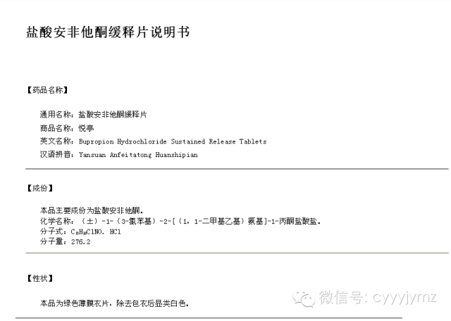
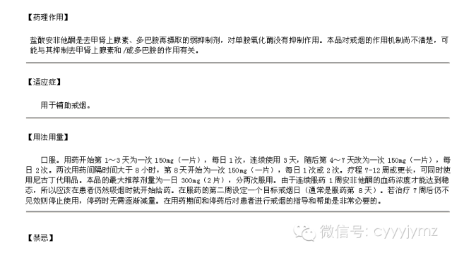
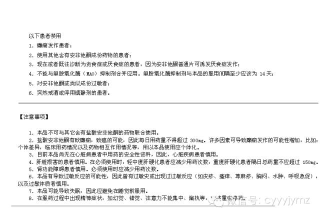
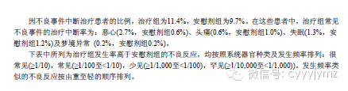

在充分认识到吸烟的危害后，多数吸烟者都有戒烟的意愿，但往往因为存在不同程度的烟草依赖而难以成功戒烟。因此，除存在药物禁忌证或对于戒烟药物疗效尚不明确的人群（少量吸烟者、孕妇、哺乳期妇女以及青少年等），对于有戒烟意愿的吸烟者均可给与戒烟药物治疗，以提高戒烟成功率。
《中国临床戒烟指南》及《美国临床戒烟指南》推荐了3类能够有效增加长期戒烟率的一线临床戒烟用药，包括尼古丁替代疗法（NRT）类药物（包括尼古丁咀嚼胶、尼古丁吸入剂、尼古丁口含片、尼古丁鼻喷剂和尼古丁贴剂）、盐酸安非他酮缓释片和伐尼克兰。
（一）NRT类药物
NRT类药物通过向人体释放尼古丁以代替或部分代替吸烟者通过吸烟获得的尼古丁，从而减轻戒断症状。
NRT类药物现有剂型包括尼古丁贴片、咀嚼胶、喷剂、含片和吸入剂5种，国内目前仅有贴片剂型。贴片释放尼古丁的速度最慢，使用频率较低（每24小时或16小时使用一次），可使体内的尼古丁含量保持在较稳定的水平；咀嚼胶、喷剂、含片和吸入剂释放尼古丁的速度较快，每天用药次数较多（每1~2小时或更短时间使用一次）。不同剂型的NRT类药物在戒烟疗效方面基本相似。
NRT类药物属于非处方药，可以在医院和药店购买，其使用方法及注意事项具体见表1。吸烟者在使用前宜咨询专业医生，并在医生指导下使用。
（二）盐酸安非他酮缓释片
盐酸安非他酮缓释片是一种有效的非尼古丁类戒烟药物，其作用机制包括抑制多巴胺及去甲肾上腺素的重摄取，可增加脑内多巴胺水平，缓解戒烟后的戒断症状；另可阻断尼古丁乙酰胆碱受体，减少吸烟的欣快感。对于重度烟草依赖者，联合应用盐酸安非他酮缓释片和NRT类药物，戒烟效果更佳。患有抑郁症或存在抑郁状态的吸烟者尤为适合使用本药物。
盐酸安非他酮缓释片为处方药，需凭医生处方在医院或药店购买，其使用方法及注意事项具体见表1。吸烟者使用前应咨询专业医生，并在医生指导下用药。
（三）伐尼克兰
伐尼克兰是一种新型戒烟药物，为α4β2尼古丁乙酰胆碱受体的部分激动剂，同时具有激动及拮抗的双重调节作用。伐尼克兰与尼古丁乙酰胆碱受体结合后，一方面发挥激动剂的作用，刺激脑内释放多巴胺，可缓解戒烟后的戒断症状；另一方面，它的拮抗特性可以阻止尼古丁与尼古丁乙酰胆碱受体结合，减少吸烟的欣快感。在亚洲人群中开展的多中心随机临床研究显示，使用伐尼克兰的吸烟者经验证的4周持续戒烟率高达50.3%。
伐尼克兰为处方药，需凭医生处方在医院或药店购买，其使用方法及注意事项具体见表1。吸烟者在使用前应咨询专业医生，并在医生指导下用药。
（四）联合用药
已被证实有效的药物组合包括：①长疗程尼古丁贴片治疗（>14周）+其他NRT类药物（如咀嚼胶）；②尼古丁贴片+盐酸安非他酮。
戒烟药物配合戒烟咨询等综合干预可进一步提高戒烟成功率。需要注意的是，目前开展的戒烟药物临床试验多针对的是每日吸烟≥10支的吸烟者，尚未在少量吸烟者（每日吸烟<10支）中评价戒烟药物的治疗效果。《美国临床戒烟指南》推荐对于有戒烟意愿的少量吸烟者也可使用戒烟药物。该类人群使用NRT药物时可以考虑减少药物剂量，使用盐酸安非他酮缓释片和伐尼克兰时不需减量。


附：戒烟药说明书
1、 尼古丁贴片（力克雷）


2、盐酸安非他酮缓释片（悦亭）





3、酒石酸伐尼克兰片（畅沛）


